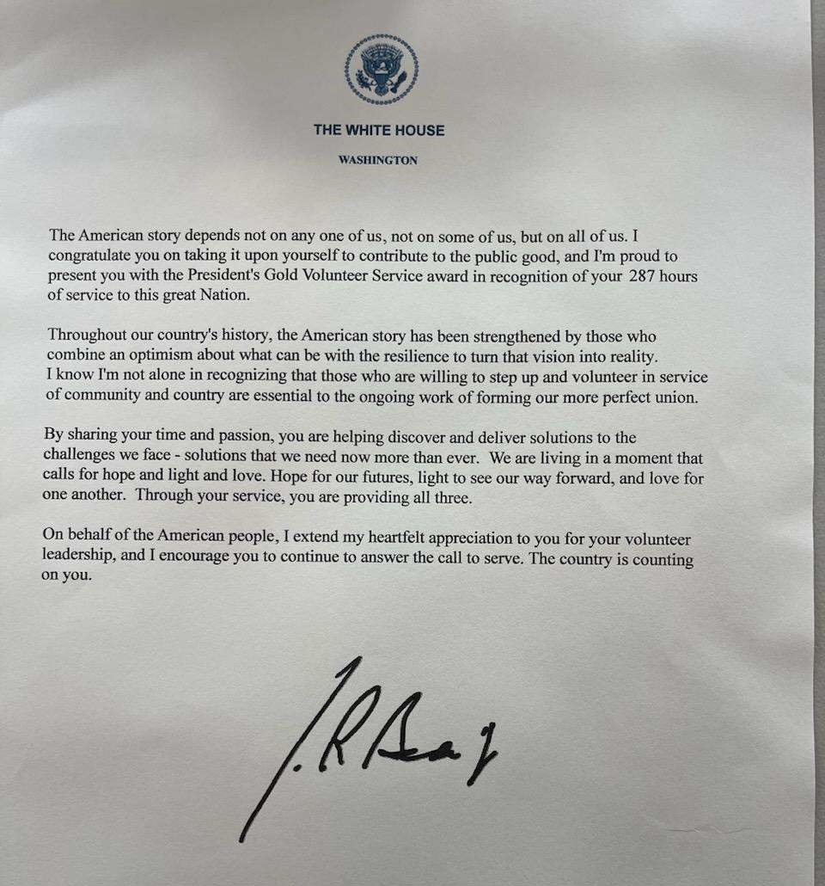

Accomplishments

Getting into CSUN's BSRS Program is an achievement in of itself! All applicants required to have completed at least 40 volunteer hours (but preferrably 100+). Every accepted applicant is then on a probationary period until all course prerequisites have been completed by the end of that semester.
Leann was rewarded with a Certificate signed by President Joe Biden for exceeding expectations in 2019.